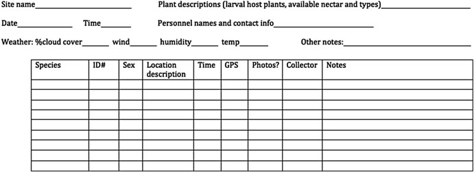

• 4. Collecting data
This section includes background on: Making rules for data collection, Making a spreadsheet for data entry, Making data (field) sheets, A checklist for data collection, Making a README and/or data dictionary, and Long term public data storage.
Motivating scenario: You are getting ready to collect, enter, and store data.
Learning goals: By the end of this chapter you should be able to
- Make a data sheet.
- Label samples.
- Describe best principles for collecting, storing, and maintaining data.
Sometimes, data come from running a sample through a machine, resulting in a computer readout of our data (e.g., genotypes, gene expression, mass spectrometer, spectrophotometer, etc.). Other times, we collect data through counting, observing, and similar methods, and we enter our data by hand. Either way, there is likely some key data or metadata for which we are responsible (e.g., information about our sample). Below,we focus on how we collect and store our data, assuming that our study and sampling scheme have already been designed. Issues in study design and sampling will be discussed in later chapters.
On two occasions I have been asked, “Pray, Mr. Babbage, if you put into the machine wrong figures, will the right answers come out?” … I am not able rightly to apprehend the kind of confusion of ideas that could provoke such a question.
Page 64 of “Passages from the Life of a Philosopher” Babbage (1864).
Making rules for data collection
Before we collect data, we need to decide what data to collect. Even in a well-designed study where we want to observe flower color at a field site, we must consider, “What are my options?”, for example:
- Should the options be “white” and “pink,” or should we distinguish between darker and lighter shades?
- If we’re measuring tree diameter, at what height on the tree should we measure the diameter?
- When measuring something quantitative, what units are we reporting?
Some of these questions have answers that are more correct, while for others, it’s crucial to agree on a consistent approach and ensure each team member uses the same method.
Similarly, it’s important to have consistent and unique names – for example, my collaborators and I study Clarkia plants at numerous sites – include Squirrel Mountain and SawMill – which one should we call SM (there is a similar issue in state abbreviation – we live in MiNnesota (MN), not MInnesota, to differentiate our state from MIchigan (MI)). These questions highlight the need for thoughtful data planning, ensuring that every variable is measured consistently.
Once you have figured out what you want to measure, how you will measure and report it, and other useful info (e.g., date, time, collector), you are ready to make a data sheet for field collection, a database for analysis, and a README or data dictionary.
Making a spreadsheet for data entry
After deciding on consistent rules for data collection, we need a standardized format to enter the data. This is especially important when numerous people and/or teams are collecting data at different sites or years. Spreadsheets for data entry should be structured similarly to field sheets (described below) so that it is easy to enter data without needing too much thought.
Some information (e.g., year, person, field site) might be the same for an entire field sheet, so it can either be written once at the top or explicitly added to each observation in the spreadsheet (copy-pasting can help here).
Making Data (field) sheets
When collecting data or samples, you need a well-designed data (field) sheet. The field sheet should closely resemble your spreadsheet but with a few extra considerations for readability and usability. Ask yourself: How easy is this to read? How easy is it to fill out? Each column and row should be clearly defined so it’s obvious what goes where. Consider the physical layout too—does the sheet fit on one piece of paper? Should it be printed in landscape or portrait orientation? Print a draft to see if there’s enough space for writing. A “notes” column can be useful but should remain empty for most entries, used only for unusual or exceptional cases that might need attention during analysis.
It’s also smart to include metadata at the top—things like the date, location, and who collected the data. Whether this metadata gets its own column or is written at the top depends on practical needs—if one person is responsible for an entire sheet, maybe it belongs at the top, not repeated for every sample (contrary to the example in Figure 2).

Data collection and data entry checklist:
- Be consistent and deliberate: You should refer to a thing in the same thoughtful way throughout a column. Take, for example, gender as a nominal variable. Data validation approaches, above, can help.
A bad organization would be: male, female, Male, M, Non-binary, Female.
A good organization would be: male, female, male, male, non-binary, female.
A just as good organization would be: Male, Female, Male, Male, Non-binary, Female.
- Use good names for things: Names should be concise and descriptive. They need not tell the entire story. For example, units are better kept in a data dictionary (Figure 4) than column name. This makes downstream analyses easier. Avoiding spaces and special characters makes column names easier to work with in R.

Save in a good place. Make a folder for your project. Keep your data sheet (and data dictionary) there. Try to keep all that you need for the project in this folder, but try not to let it get too complex. Some people like to add more order with additional subfolders for larger projects.
Save early and often: You are welcome.
Backup your data, do not touch the original data file and do not perform calculations on it. In addition to scans of your data (if collected on paper) also save your data on both your computer and a locked, un-editable location on the cloud (e.g. google docs, dropbox, etc.). When you want to do something to your data do it in R, and keep the code that did it. This will ensure that you know every step of data manipulation, QC etc.
Do Not Use Font Color or Highlighting as Data. You may be tempted to encode information with bolded text, highlighting, or text color. Don’t do this! Be sure that all information is in a readable column. These extra markings will either be lost or add an extra degree of difficulty to your analysis. Reserve such markings for the presentation of data.
No values should be implied Never leave an entry blank as “shorthand for same as above”. Similarly, never denote the first replicate (or treatment, or whatever) by its order in a spreadsheet, but rather make this explicit with a value in a column. Data order could get jumbled and besides it would take quite a bit of effort to go from implied order to a statistical analysis. It is ok to skip this while taking data in the field, but make sure no values are implied when entering data into a computer.
Data should be tidy (aka rectangular): Ideally data should be entered as tidy (Each variable must have its own column. Each observation must have its own row. Each value must have its own cell). However, you must balance two practice considerations – “What is the best way to collect and enter data?” vs “What is the easiest way to analyze data?” So consider the future computational pain of tidying untidy data when ultimately deciding on the best way to format your spreadsheet (above).
Use data validation approaches: When making a spreadsheet, think about future-you (or your collaborator) who will analyze the data. Typos and inconsistencies in values (e.g., “Male,” “male,” and “M” for “male”) create unnecessary headaches. Accidentally inputting the wrong measure (e.g., putting height where weight should be, or reporting values in kg rather than lb) sucks.
Both Excel and Google Sheets (and likely most spreadsheet programs) have a simple solution: use the “Data validation” feature in the “Data” drop-down menu to limit the potential categorical values or set a range for continuous values that users can enter into your spreadsheet. This helps ensure the data are correct.
Making a README and/or “data dictionary”
A data dictionary is a separate file (or sheet within a file, if you prefer) that explains all the variables in your dataset. It should include the exact variable names from the data file, a version of the variable name that you might use in visualizations, and a longer explanation of what each variable means. Additionally, it is important to list the measurement units and the expected minimum and maximum values for each variable, so anyone using the data knows what to expect.
Alongside your data dictionary, you should also create a README file that provides an overview of the project and dataset, explaining the purpose of the study and how the data were collected. The README should include a description of each row and column in the dataset. While there may be some overlap with the data dictionary, this is fine. The data dictionary can serve as a quick reference for plotting and performing quality control, whereas the README provides a higher-level summary, designed for those who may not have been directly involved in the project but are seriously interested in the data.

Long-term public data storage
A key to the scientific method is reproducibility. This is why scientific papers have a methods section. Nowadays - the internet allows for even more detailed sharing of methods. Additionally it is the expectation in most fields that data is made available after publication on repositories like data DRYAD or DRUM.